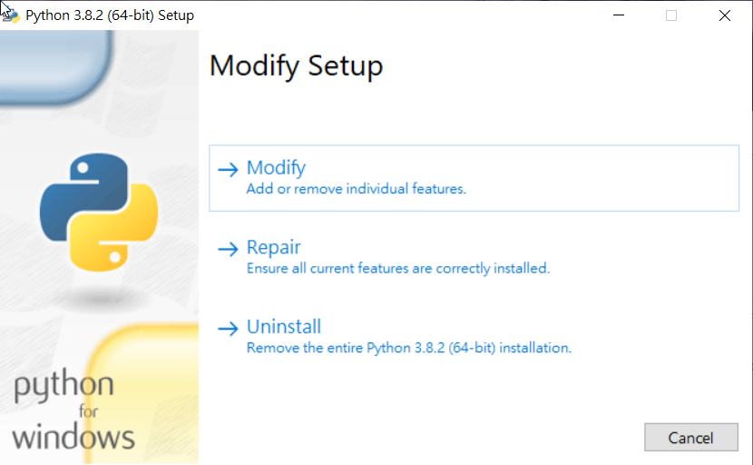
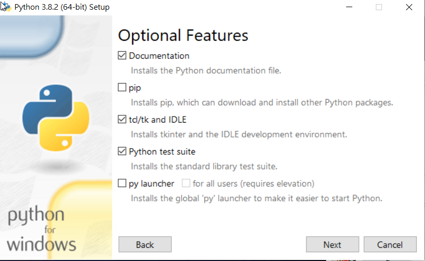
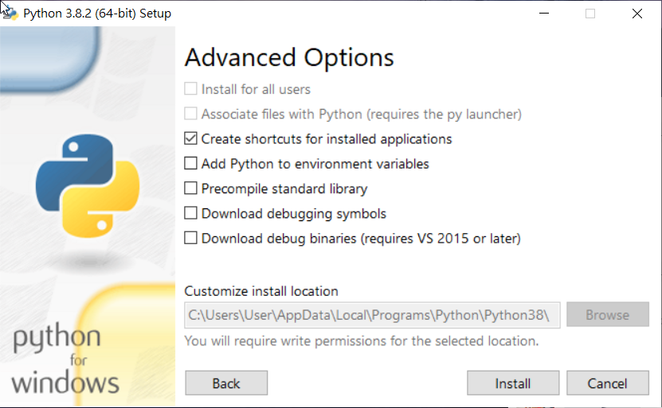
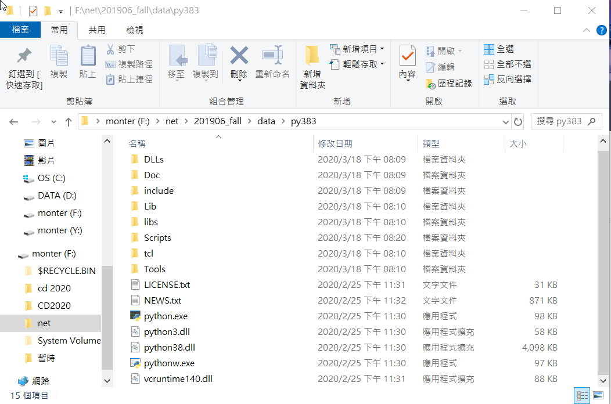
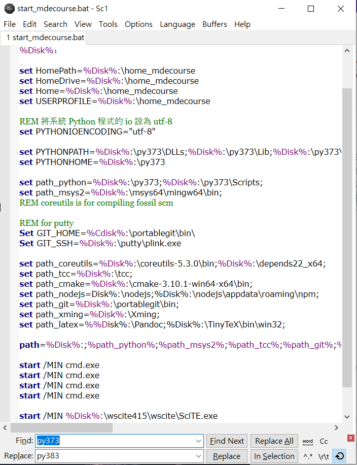
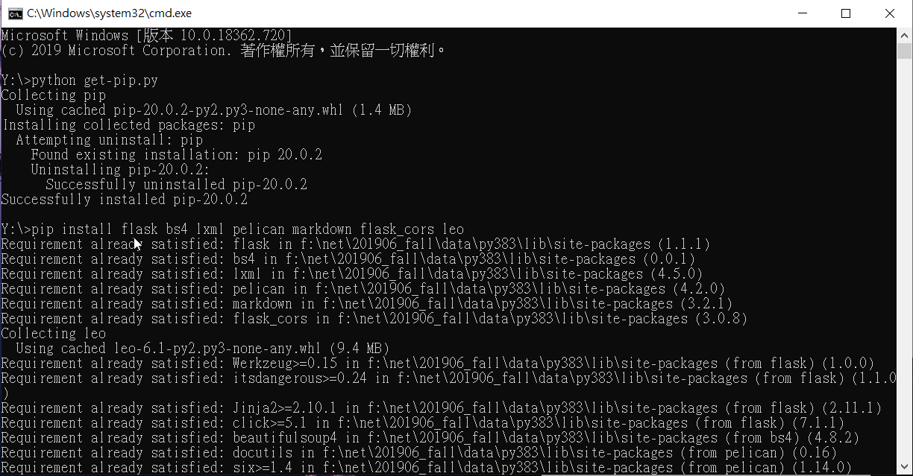
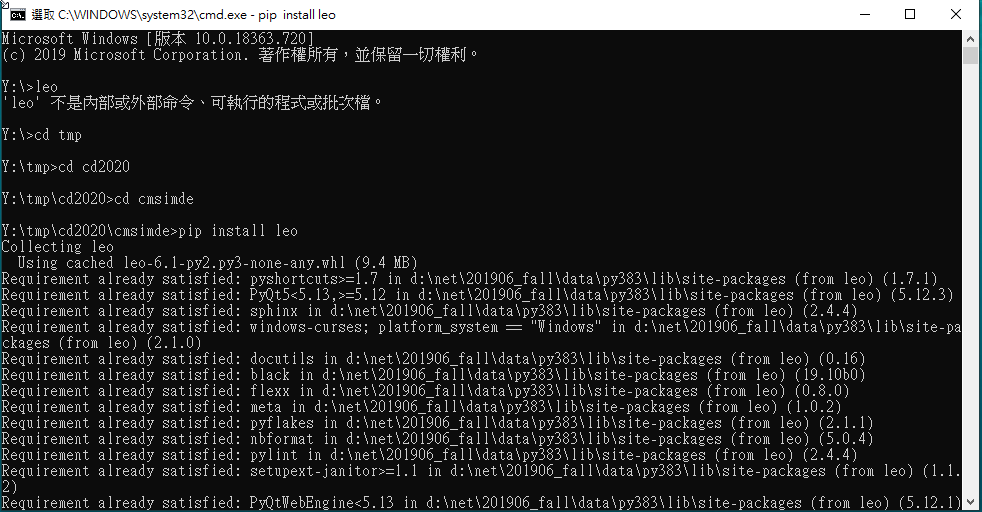

Develop <<
Previous week1-5
week2
更新python3.8.2
到 https://www.python.org/downloads/release/python-382/https://www.python.org/downloads/release/python-382/ 下載 Windows x86-64 executable installer，載完後執行python-3.8.2-amd64.exe

選擇 Modify

不要選擇 pip，並選擇 Next

接著選擇完你的下載目錄後就可以點選 Install 來安裝

到自己原本可攜底下的 data 創一個 py383，並去剛剛下載對應的目錄，去複製 python 的檔案來 py383 貼上
到https://bootstrap.pypa.io/get-pip.py頁面，滑鼠右鍵另存新檔到自己原本可攜底下
到自己可攜底下的 wscite415 開啟 Scite.exe 編輯器 ，把之前 start_mdecourse.bat 拖移進來並利用 Replace 來把原本的 py373 取代成 py383

存檔後再重新開啟，讓系統重新讀取
接著安裝 pip 和 cmsimde 所需模組
先到 https://bootstrap.pypa.io/get-pip.py 下載 get-pip.py，並用程式碼自動載入

下面有網址可以下載已做好的cd2020
https://drive.google.com/file/d/1DIM8rOFdTgGUXP6ugSSueat7pbZOWCaN/view?usp=sharing
實際操作影片
參考網站
http://mde.tw/cd2020/content/KMOL2020.html
http://mde.tw/cp2019/content/Mac%20Notebook.html
https://s40723114.github.io/cd2020/content/%E6%9B%B4%E6%96%B0Python%203.8.2.html
問題1開不起 Leo
開啟命令視窗，到 cmsimde 重新 pip install leo

week3
Assignment 1
creat the portable Python programming system for Windows 10 64bit system
先在隨身碟底下創一個 CD2020 的資料夾，並在裡面創一個 data
接著在 data 底下創 6 個資料夾，分別叫 PortableGit msys2 python383 wscite237 tmp home
PortableGit
到 https://git-scm.com/download/win 下載 64-bit Git for Windows Portable 下載完後，安裝檔案到 CD2020/data/PortableGit
msys2
到 https://www.msys2.org/ 下載 msys2-x86_64-20190524.exe 下載完後，安裝檔案到 CD2020/data/msys2
python383
到 https://www.python.org/downloads/release/python-382/ 下載 Windows x86-64 executable installer 下載完後，安裝並複製檔案到 CD2020/data/python383
wscite237
到 https://www.scintilla.org/SciTEDownload.html 下載 full 64-bit download ，下載完後，解壓縮檔案到 CD2020/data/wscite237輯器執行的 Scite.exe 編，打開 Options 下的 Global Options File 其中的預設值 code.page=0 修改設定為 code.page=65001，將 load.on.activate=1 前面的井字號拿掉
home
把舊的 2019fall/data/home 裡面複製 .gitconfig 並貼到新的 home 裡
tcc
到 https://github.com/TinyCC/tinycc 接著到命令提示字元裡 git clone https://github.com/TinyCC/tinycc.git tcc
Jupyterlab
到命令提示字元裡使用 pip install jupyterlab==2.0.1 就會自動安裝進去
Fossil SCM
到 https://www.fossil-scm.org/home/doc/trunk/www/index.wiki 下載 fossil scm 下載完後，解壓縮檔案到 CD2020/data
Flutter
到 https://github.com/flutter/flutter 接著到命令提示字元裡 git clone https://github.com/flutter/flutter.git -b stable
vscode
到 https://github.com/microsoft/vscode 接著到命令提示字元裡 git clone https://github.com/microsoft/vscode.git vscode
tmp
git clone 自己的倉儲
安裝 pip 和 cmsimde 所需模組
先到 https://bootstrap.pypa.io/get-pip.py 下載 get-pip.py，並用程式碼自動載入
實際操作影片
參考網站
http://mde.tw/cd2020/content/KMOL2020.html
https://gitter.im/mdecourse/wcm2020
http://mde.tw/cp2019/content/Mac%20Notebook.html
https://s40723150.github.io/cd2020/content/W2.html
week4
dart 轉 javascript
確認可攜系統有無 flutter 等等需要用到裡面 dart dks 的 dart2js
修改 SciTE cpp.properties
# for Dart 1/7
file.patterns.dart=*.dart
# for Dart 2/7
filter.dart=Dart(dart)|*.dart|
# for Dart 3/7
*filter.dart=$(filter.dart)
# for Dart 4/7
lexer.$(file.patterns.dart)=cpp
# for Dart 5/7
*language.dart=&Dart|dart||
# for Dart 6/7
keywordclass.dart=\
abstract continue false new this \
as default final null throw \
assert deferred finally operator true \
async do for part try \
async* dynamic get rethrow typedef \
await else if return var \
break enum implements set void \
case export import static while \
catch external in super with \
class extends is switch yield \
const factory library sync* yield*
keywords.$(file.patterns.dart)=$(keywordclass.dart)
# for Dart 7/7
command.go.*.dart=dart.exe "$(FileNameExt)"
command.compile.*.dart=dart2js -o $(FileName).js $(FileNameExt)
修完後的 http://mde.tw/cp2019/downloads/Scite_cpp.properties_dart_added.7z，解開壓縮後, 放入隨身系統 data\wscite415\wscite 目錄中
之後開啟編譯器，開啟檔案，開啟檔案，使用 tool 的 compile 就可以轉成 .js 檔
實際影片
Develop <<
Previous